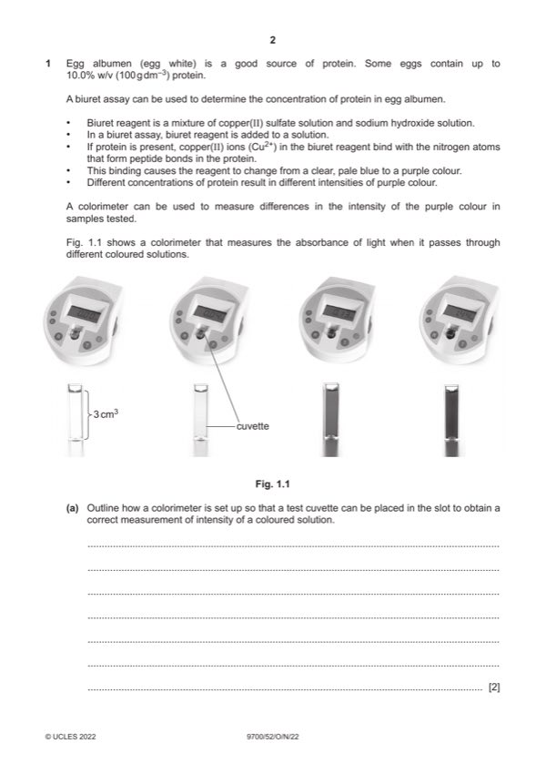

Question 1

Original paper page 2
Part 1(a) — solution
any two from: 2
Mark points
- Include the ideas shown in the solution above.
Part 1(b)(i) — solution
From description or table: 2
Mark points
- Include the ideas shown in the solution above.
Part 1 — solution
Correct method to dilute stock solution with water to 0.1% ;
Table:
Mark points
- Include the ideas shown in the solution above.
Part 1(b)(ii) — solution
independent variable 1
protein concentration
and
dependent variable
absorbance ;
Mark points
- Include the ideas shown in the solution above.
Part 1(b)(iii) — solution
1 x-axis protein concentration and % 2
and
y-axis absorbance and au or no units added ;
Mark points
- Include the ideas shown in the solution above.
Part 1(b)(iv) — solution
copper(II) ions, binding with the nitrogen atoms, that form peptide bonds ; 2
will have same number of peptide bonds ;
2022 Page 5 of 10
9700/52 Cambridge International AS & A Level – Mark Scheme October/November 2022
Mark points
- Include the ideas shown in the solution above.
Part 1(c) — solution
any six from: 6
Mark points
- Include the ideas shown in the solution above.
Part 1 — solution
same / stated, volume of protein concentrations and egg ;
Mark points
- Include the ideas shown in the solution above.
Part 1(c) — solution
10 named hazard and risk and precaution ;
Hazard Risk Precaution
Corrosive
Biuret solution Irritant
Moderate / medium, hazard / risk
Corrosive
Sodium hydroxide Wear gloves / goggles / mask / PPE
Irritant
Corrosive
Irritant
Copper sulphate
Moderate / medium, hazard / risk
Hazardous to the aquatic environment Do not pour down sink
Egg / Albumin / Protein Allergen Wear gloves / goggles / mask / PPE / do not consume
Mark points
- Include the ideas shown in the solution above.
Part 1 — solution
DNA (sequencing), only identifies presence of genes ;
Mark points
- Include the ideas shown in the solution above.
Part 1 — solution
none of the genes coded for enzymes in the urea cycle ;
Mark points
- Include the ideas shown in the solution above.